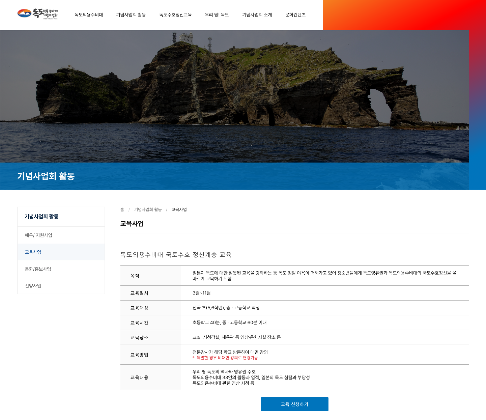
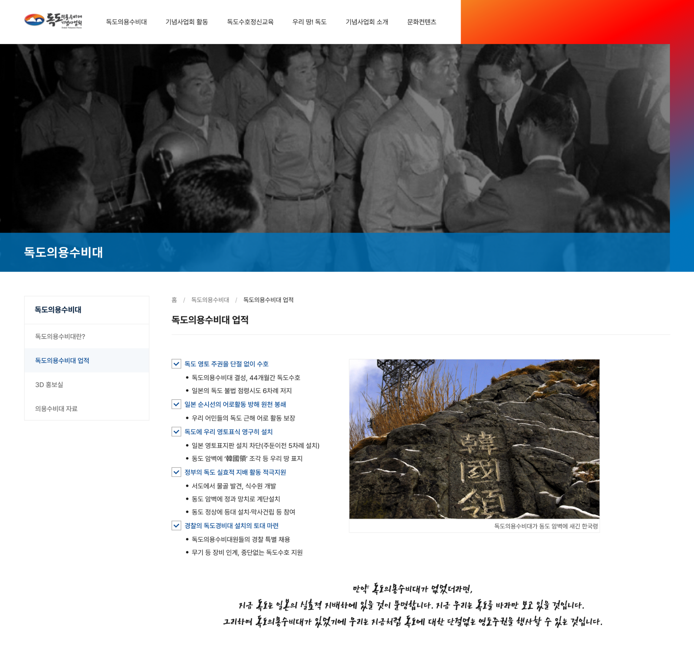
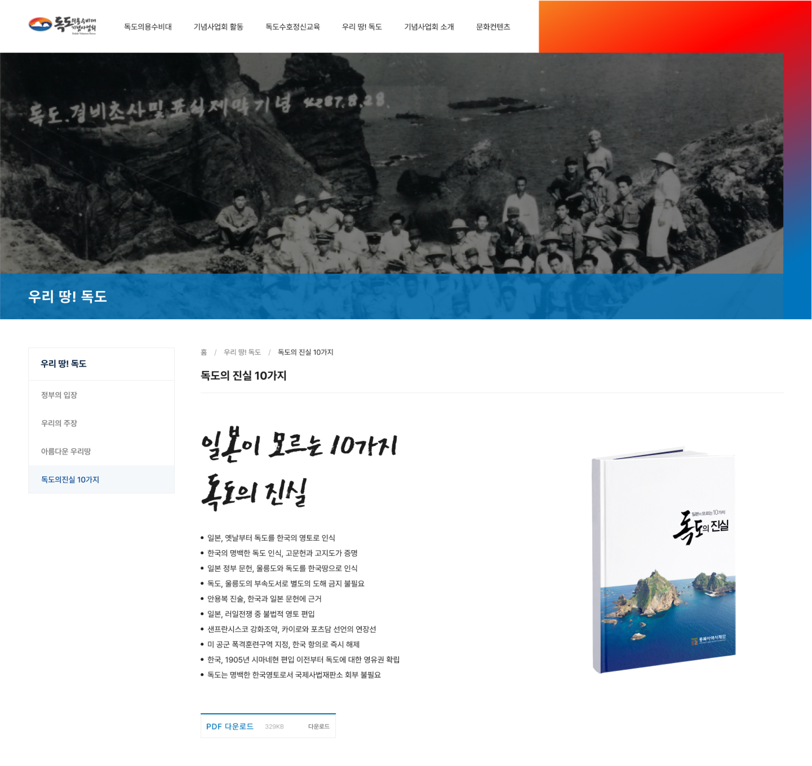

<!DOCTYPE html>
<html>
    <head>
        <meta charset="utf-8" />
        <meta name="viewport" content="width=device-width, initial-scale=1">
        <title>Dokdo Volunteer Defense Team</title>
        <link rel="stylesheet" type="text/css" href="./css/styles.css">
        <link rel="preconnect" href="https://fonts.googleapis.com">
        <link rel="preconnect" href="https://fonts.googleapis.com">
        <link rel="preconnect" href="https://fonts.gstatic.com" crossorigin>
        <link href="https://fonts.googleapis.com/css2?family=Courier+Prime:ital,wght@0,400;0,700;1,400;1,700&family=Montserrat:ital,wght@0,100..900;1,100..900&display=swap" rel="stylesheet">
        <link rel="icon" type="image/png" href="dy_favicon.png">
    </head>
</html>
<body>
    <div class="mode-toggle">
        <button id="darkModeToggle">
            
        </button>
    </div>
    <header>
        <div class="language-selector">
            <a href="#" class="active">KR</a>
            <div class="lang-divider"></div>
            <a href="./en/sub_dokdo_en.html">EN</a>
            <div class="lang-divider"></div>
            <a href="./cn/sub_dokdo_cn.html">CN</a>
        </div>
    </header>
    <div class="sub-contents">
        <a href="index_kr.html">&lt; Back to Home</a>
        
        <div class="sub-contents-text">
            <div class="sub-text-title">Overview</div>
            <div class="sub-text-p">
                독도의용수비대는 울릉도 주민으로서 우리의 독도를 일본의 침탈로부터 보호하기 위해 결성된 단체이고 독도가 완전하게 영토주권을 행사 할 수 있게 한 순수 민간조직입니다.
                <br/><br/>
                ZiPIDA 회사에서 기념사업회 웹사이트 디자인 제안이와서 디자이너 한명와 함께 작업을 하여 기여도 50%으로 작업을 시작하였고 기존 로고의 특징과 우리나라에 맞는 느낌을 주기위해 색감과 폰트에 심의를 드렸고 서체 폰트도 섞어쓰며 그들이 남긴 업적들을 강조하였습니다. 
                <br/><br/>
                웹사이트는 반응형으로 디자인하여 하단에 링크로 모바일, 타블렛으로도 확인 가능합니다.
            </div>
        </div>        
        
        
        
        <div class="sub-contents-text">
            <div class="sub-text-title">Link</div>
            <div class="sub-text-p">
                    <a href="https://dokdovolunteerdefenseteam.or.kr/">https://dokdovolunteerdefenseteam.or.kr/</a>
            </div>
        </div>

    </div>
    <footer>
        <p>&copy; 2025 Dayeong Kim. All rights reserved.</p>
    </footer>

    <script src="./js/scripts.js"></script>
</body>